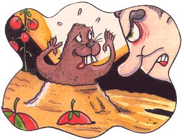

LAST LAUGH
Outwitting the enemy, with help from the family cat.
While landscaping our new home, an iris nursery enchanted us: tangerine orange, sunshine yellow, vibrant violet, royal purple, midnight blue, even dainty peach. Before I knew what was happening, Ann, my dear wife, carried away by her passion, purchased $150-worth of iris rhizomes, dug up the inhospitable red clay and rock bed that was our front yard, added 0/10/10, chicken manure, and compost, and planted the irises.
Within days, I returned from work to find Ann looking visibly shaken, like someone who'd just happened by a particularly disturbing accident scene. She led me to the site of the carnage, where I beheld her ravaged iris garden: all six dozen rhizomes-gone. Ugly holes dotting the yard served as mocking reminders of the crime. Nearby piles of dirt suggested gophers. So, too, did the complete, utter, lightning-speed devastation.
Still, we refused to be discouraged. After all, lightning doesn't strike the same place twice, right?
Ann put me in charge of the immense backyard. I tore into the same red clay and rock bed, added fertilizer, and planted vegetable and flower gardens. After weeks of backbreaking labor, I tracked the progress of each shoot as if it were our firstborn.
What? Did I really see that tender tomato plant shake itself like a puppy emerging from a bath? Suddenly it submerged. Who hijacked my tomato?
I'd had enough. I drove to the neighborhood nursery to see Ed, my trusted garden expert. Before I'd finished my incoherent description, he said, "You've got gophers. They're everywhere around here. Look at this gopher trap-costs only $4.95 and it's the best. Follow the directions and you'll get those rodents."
I struggled with the instructions. A diagram displayed the main and lateral tunnels and the recommended placement of the trap, which was to be secured by a cord tied to a stake. The directions advised digging a hole to the main tunnel, but offered no clue on how to find it.
After poking dozens of holes and ruining half of our vegetables and flowers, I gave up looking for the tunnels. I dug where the gophers had pulled the tomatoes and geraniums into the ground, laid the trap, covered the hole, and waited.
Several days elapsed. Three more vegetables and five more flowers became casualties. The gophers ignored my traps. I went to see Ed.
"No results, eh, Steve?"
"Ed, the instructions talk about tunnels, but not how to find them. And the gophers avoid my traps while they continue to yank my plants."
Ed sarcastically replied, "My four-year-old grandson can find the tunnels. Just push the end of a pole into the ground and when it goes in easy, you've found one. Maybe you forgot to wear gloves. Gophers avoid anything with a human scent."
I didn't know that. Your instructions show bare hands."
"Do all the work with the tunnels and traps wearing gloves and you'll get your gophers," Ed insisted.
Wearing new $9.95 gopher gloves, I found soft spots, dug a new hole, set the trap, and covered the hole.
I got up early the next morning to find the stake gone. I dug, finding no trap, stake, or gopher.
Ed could tell I was dejected. He sat me down on a ledge and gave me a pep talk.
"Steve, you know your brain's a lot bigger than a gopher's. You really can outsmart him. Instead of a stake, tie the cord to a brick. It's heavy and it won't fit in the gopher's hole. So he can't get away once he's snared by the jaws."
The following morning, as I took my morning swim, a dead gopher floated into my face. My pool had caught a gopher without a trap.
Later that same day, my cat scratched at the door proudly flaunting a gopher in his mouth.
The score stood: pool-1; cat-1; trap-0.
Disgusted, I groused over the $4.95 for the trap and $9.95 for the gloves. "I'd be. better off with another cat-or a moat," I moaned.
Ed reluctantly credited my account for the trap and gloves.
The following year, I relied on the pool and cat. Yes, we suffered casualties from gophers. But at least I'd eliminated the trap holes from my yard-and wallet.
|
 M.E. COHEN |
|
|